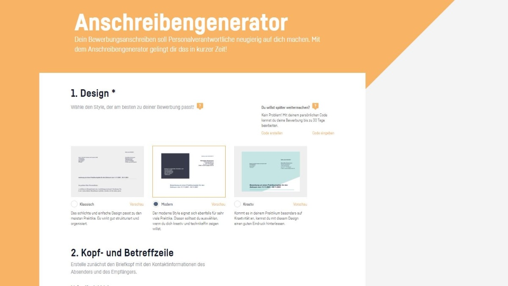

Tipps für deine Bewerbung
Der Anruf vor der Bewerbung
Mit einem gut vorbereiteten Anruf kannst du die Chance auf dein Wunsch-Praktikum erheblich steigern.

Das Bewerbungsanschreiben
Dein Anschreiben ist das Erste, was Personalverantwortliche von dir zu Gesicht bekommen.
Das Vorstellungsgespräch vorbereiten
Eine intensive Vorbereitung ist ein absolutes Muss, um im Gespräch zu überzeugen.
Schwierige Fragen im Vorstellungsgespräch
Um den Stresstest zu bestehen, kommt es vor allem darauf an, cool zu bleiben.
Kleidung und Körpersprache
Egal ob Gespräch oder erster Arbeitstag — der erste Eindruck zählt.
Der Lebenslauf
Der Lebenslauf gibt Personalverantwortlichen einen Überblick darüber, wer du bist und was du kannst. Erfahre, worauf es ankommt, wenn du deinen Lebenslauf schreibst.
Üben mit SIEYA
So bewirbst du dich richtig
So bewirbst du dich richtig für ein Schülerpraktikum, eine Ausbildung oder ein Duales Studium - die…
Auswahltag: So überzeugst du
Am Auswahltag oder im Vorstellungsgespräch überzeugen - wie das gelingt.
Auswahltag: Ablauf
Was dich am Auswahltag typischerweise erwartet - der grobe Ablauf.
Auswahltag: Outfit und Vorbereitung
Was du am Auswahltag anziehst und wie du dich am besten vorbereitest.
Outfit-Check fürs Bewerbungsgespräch
Outfit-Check und Tipps zur Vorbereitung auf den Auswahltag - vom passenden Look bis zur ersten Frage, die dir…